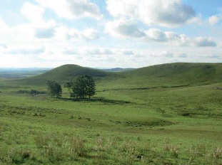

Prairies
They develop in areas with a temperate and humid climate.
They lack almost completely trees and have a large amount of soft and even grasses.
They are ideal for the development of agricultural activities, such as cereal and oilseed crops, and livestock activities, for example, cattle breeding.

Meadow, Uruguay